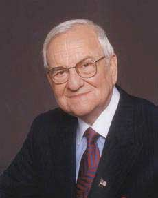

CommunicationThe process by which information is exchanged between individuals through a common system of symbols, signs, or behavior. is vital to organizations—it’s how we coordinate actions and achieve goals. It is defined in Webster’s dictionary as a process by which information is exchanged between individuals through a common system of symbols, signs, or behavior. We know that 50% to 90% of a manager’s time is spent communicating,Schnake, M. E., Dumler, M. P., Cochran, D. S., & Barnett, T. R. (1990). Effects of differences in subordinate perceptions of superiors’ communication practices. Journal of Business Communication, 27, 37–50. and communication ability is related to a manager’s performance.Penley, L. E., Alexander, E. R., Jernigan, I. E., & Henwood, C. I. (1991). Communication abilities of managers: The relationship of performance. Journal of Management, 17, 57–76. In most work environments, a miscommunication is an annoyance—it can interrupt workflow by causing delays and interpersonal strife. But, in some work arenas, like operating rooms and airplane cockpits, communication can be a matter of life and death.
So, just how prevalent is miscommunication in the workplace? You may not be surprised to learn that the relationship between miscommunication and negative outcomes is very strong. Data suggest that deficient interpersonal communication was a causal factor in approximately 70% to 80% of all accidents over the last 20 years.NASA study cited by Baron, R. (n.d.). Barriers to effective communication: Implications for the cockpit. Retrieved July 3, 2008, from AirlineSafety.com: http://www.airlinesafety.com/editorials/BarriersToCommunication.htm.
Figure 8.2
At NASA, success depends on strong communication.
Poor communication can also lead to lawsuits. For example, you might think that malpractice suits are filed against doctors based on the outcome of their treatments alone. But a 1997 study of malpractice suits found that a primary influence on whether or not a doctor is sued is the doctor’s communication style. While the combination of a bad outcome and patient unhappiness can quickly lead to litigation, a warm, personal communication style leads to greater patient satisfaction. Simply put, satisfied patients are less likely to sue.Communications skills cut malpractice risk—study reveals most important reason that patients decide to file malpractice suits is because of poor communication by physicians and not medical errors. (1997, October). USA Today.
In business, poor communication costs money and wastes time. One study found that 14% of each workweek is wasted on poor communication.Armour, S. (1998, September 30). Failure to communicate costly for companies. USA Today, p. 1A. In contrast, effective communication is an asset for organizations and individuals alike. Effective communication skills, for example, are an asset for job seekers. A recent study of recruiters at 85 business schools ranked communication and interpersonal skills as the highest skills they were looking for, with 89% of the recruiters saying they were important.Alsop, R. (2006, September 20). The top business schools: Recruiters’ M.B.A. picks. Wall Street Journal Online. Retrieved September 20, 2006, from http://online.wsj.com/article/SB115860376846766495.html?mod=2_1245_1. On the flip side, good communication can help a company retain its star employees. Surveys find that when employees think their organizations do a good job of keeping them informed about matters that affect them and when they have access to the information they need to do their jobs, they are more satisfied with their employers.What are the bottom line results of communicating? (2003, June). Pay for Performance Report. Retrieved July 1, 2008, from http://www.mercerHR.com. So can good communication increase a company’s market value? The answer seems to be yes. “When you foster ongoing communications internally, you will have more satisfied employees who will be better equipped to effectively communicate with your customers,” says Susan Meisinger, president and CEO of the Society for Human Resource Management. Research finds that organizations that are able to improve their communication integrity also increase their market value by as much as 7%.Meisinger, S. (2003, February). Enhancing communications—Ours and yours. HR Magazine. Retrieved July 1, 2008, from http://www.shrm.org/hrmagazine/archive/0203toc.asp. We will explore the definition and benefits of effective communication in our next section.
Communication fulfills three main functions within an organization, including coordination, transmission of information, and sharing emotions and feelings. All these functions are vital to a successful organization. The coordination of effort within an organization helps people work toward the same goals. Transmitting information is a vital part of this process. Sharing emotions and feelings bonds teams and unites people in times of celebration and crisis. Effective communication helps people grasp issues, build rapport with coworkers, and achieve consensus. So, how can we communicate effectively? The first step is to understand the communication process.
Figure 8.3
Lee Iacocca, past president and CEO of Chrysler until his retirement in 1992, said, “You can have brilliant ideas, but if you can’t get them across, your ideas won’t get you anywhere.”
We all exchange information with others countless times each day by phone, e-mail, printed word, and of course, in person. Let us take a moment to see how a typical communication works using this as a guide.
Figure 8.4 Process Model of Communication

A senderThe person initiating a communication., such as a boss, coworker, or customer, originates the message with a thought. For example, the boss’s thought could be: “Get more printer toner cartridges!”
The sender encodesThe translation of ideas into words. the message, translating the idea into words.
The boss may communicate this thought by saying, “Hey you guys, let’s order more printer toner cartridges.”
The mediumThe way that a sender’s message is conveyed. of this encoded message may be spoken words, written words, or signs.
The receiverThe person who a message is intended to reach. is the person who receives the message.
The receiver decodesThe process of assigning meaning to a received message. the message by assigning meaning to the words.
In this example, our receiver, Bill, has a to-do list a mile long. “The boss must know how much work I already have,” the receiver thinks. Bill’s mind translates his boss’s message as, “Could you order some printer toner cartridges, in addition to everything else I asked you to do this week…if you can find the time?”
The meaning that the receiver assigns may not be the meaning that the sender intended, because of factors such as noise. NoiseAnything that interferes with or distorts the message being transformed. is anything that interferes with or distorts the message being transformed. Noise can be external in the environment (such as distractions) or it can be within the receiver. For example, the receiver may be extremely nervous and unable to pay attention to the message. Noise can even occur within the sender: The sender may be unwilling to take the time to convey an accurate message, or the words that are chosen can be ambiguous and prone to misinterpretation.
Picture the next scene. The place: a staff meeting. The time: a few days later. Bill’s boss believes the message about printer toner has been received.
“Are the printer toner cartridges here yet?” Bill’s boss asks.
“You never said it was a rush job!” Bill protests.
“But!”
“But!”
Miscommunications like these happen in the workplace every day. We’ve seen that miscommunication does occur in the workplace, but how does a miscommunication happen? It helps to think of the communication process. The series of arrows pointing the way from the sender to the receiver and back again can, and often do, fall short of their target.
Communication is vital to organizations. Poor communication is prevalent between senders and receivers. Communication fulfills three functions within organizations, including coordination, the transmission of information, and sharing emotions and feelings. Noise can disrupt or distort communication.


{kind=link}